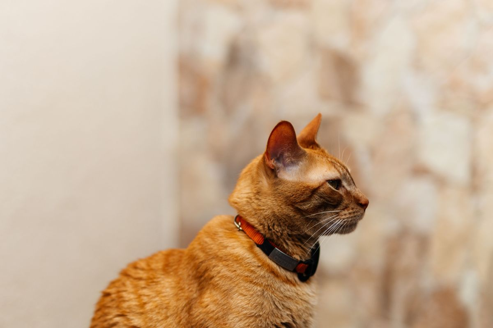

Clínica veterinaria · Temuco
¿Es urgencia
o puede esperar?
Es la pregunta que se hace todo dueño mirando a su animal a las nueve de la noche, y la que decide entre una consulta tranquila mañana y una urgencia cara esta noche. Nadie la contesta por escrito.

- 4,6de nota en Google
- 177reseñas que ya escribieron
- 15señales ordenadas en la tabla de acá abajo
- 0páginas propias donde leerlas hoy
Nota y reseñas tomadas de su ficha de Google el 01-09-2026.

La tabla que evita el viaje en vano
Es urgencia,
es para hoy,
o es un control
Tres tiempos y lo que suele ir en cada uno. No sirve para saber qué tiene el animal — sirve para saber cuándo llevarlo, que es una pregunta distinta y mucho más fácil de contestar.
Ante la duda, se llama. Preguntar es gratis. Esta tabla es una referencia general y no reemplaza a nadie. Si un animal está mal y no aparece en ninguna fila, eso también es motivo para llamar. falta: que la clínica revise y firme la tabla
| Lo que se ve | Cuándo | Por qué |
|---|---|---|
| Le cuesta respirar, respira raro o con la boca abierta | Ahora | Es la que menos espera de todas. Un animal que no ventila bien se deteriora en minutos, no en horas. |
| Convulsión, temblor generalizado o pérdida de conciencia | Ahora | Aunque se le pase sola: lo que importa es por qué pasó, y eso se averigua el mismo día. |
| Comió o pudo haber comido algo tóxico | Ahora | Y con el envase en la mano. No se espera a ver si le hace algo, y no se le provoca el vómito por cuenta propia. |
| Sangrado que no se detiene, golpe fuerte o atropello | Ahora | Un animal atropellado puede verse bien y tener algo grave adentro. Se traslada moviéndolo lo mínimo. |
| No puede orinar o lo intenta sin resultado | Ahora | Es más frecuente y más grave de lo que la gente cree, especialmente en gatos machos. |
| Vientre hinchado y duro, con arcadas sin vomitar | Ahora | Sobre todo en perros grandes y después de comer. No es algo que convenga observar en la casa. |
| No come nada desde ayer | Hoy | Un día sin comer en un adulto es una señal; en un cachorro o un gato, es menos tiempo todavía. |
| Vómito o diarrea que se repite | Hoy | Una vez le pasa a cualquiera. Repetido, y con el animal decaído o sin tomar agua, no. |
| Cojera que apareció de golpe | Hoy | Y sobre todo si no apoya la pata. Esperar a ver si se le pasa suele terminar en algo más largo de tratar. |
| Un ojo cerrado, enrojecido o con mucho lagrimeo | Hoy | Los ojos avanzan rápido. Lo que hoy se resuelve simple, en tres días puede no resolverse. |
| Está apagado, escondido, no quiere que lo toquen | Hoy | El cambio de conducta es de las primeras cosas que el dueño nota y de las últimas que reporta. Cuenta. |
| Se rasca seguido o se muerde una zona | Control | Salvo que ya esté con la piel abierta o que empeore rápido, en cuyo caso pasa a ser de hoy. |
| Pelo opaco, caída de pelo, caspa | Control | Suele venir de algo que se ve mejor con calma y con el animal completo, no en una urgencia. |
| Mal aliento, sarro, encías rojas | Control | Es de lo que más se posterga y de lo que más problemas trae a la larga. |
| Un bulto que lleva tiempo y no cambia | Control | Control, sí — pero control de verdad, no dentro de un año. Si crece o cambia, pasa a ser de hoy. |
La tabla no nombra ninguna enfermedad, ningún medicamento ni ninguna causa. Sólo ordena el tiempo. Todo lo demás lo dice la clínica con el animal adelante.
Seis cosas, treinta segundos
Lo que le van a preguntar
apenas conteste
Una llamada se resuelve mucho mejor con esto ya pensado. No es información clínica: son los datos que cualquiera necesita para saber si lo hace venir ahora o le da hora para mañana.
-
01
Qué animal es y cuánto pesa
Perro o gato, la edad más o menos, y el peso aproximado. El peso cambia casi todo lo que viene después.
-
02
Desde cuándo pasa
La hora en que empezó, no «hace un rato». Es el dato que más se olvida y el que más ordena la conversación.
-
03
Cuántas veces
Cuántos vómitos, cuántas deposiciones, cuántos episodios. Una vez y ocho veces son dos llamadas distintas.
-
04
Qué comió y a qué hora
Lo de siempre, algo distinto, o algo que no debía. Si fue algo que no debía, tener el envase al lado.
-
05
Si toma algo
Cualquier cosa que esté tomando o que le hayan puesto. Sin buscar el nombre en internet: se lee de la caja tal como está escrito.
-
06
Si ya le pasó antes
Y si está operado, si tiene alguna condición conocida, y el carnet de vacunas si aparece. Vale aunque esté atrasado.
Y si hay que salir: transportadora o correa, el carnet, la caja de lo que toma y el envase de lo que comió. falta: que la clínica revise esta lista

Se llaman igual que la ciudad
Y el que busca «veterinaria Temuco» no los encuentra
El momento para el que está escrita
A las nueve de la noche,
con el teléfono en la mano
La página no está pensada para el que compara veterinarias con calma un martes a mediodía. Está pensada para el que ya está preocupado, tiene el animal encima y necesita decidir en dos minutos.
A esa hora nadie lee una carta de servicios. Se lee una fila, se decide, y se marca. Por eso lo primero de la página es la tabla y no la presentación de la clínica: la presentación importa después, cuando ya se confió en lo que se leyó.
Y por eso pesa lo que pesa. Sin banners de cookies, sin ventanas de chat, sin videos que arrancan solos, sin una sola petición a otro servidor. Abre igual con una barra de señal que con cinco, que es exactamente la situación en la que alguien la va a abrir.
Cero peticiones a terceros · cero rastreadores · cero cookies
Lo que pasa antes de subir al auto
La mitad de las urgencias no son urgencias
Y la otra mitad no puede esperar. Distinguirlas por teléfono, a las once de la noche y con el animal en brazos, es lo más difícil que hace una veterinaria — y lo que nadie deja por escrito. Una lista de señales, dicha sin dramatismo, ahorra el viaje a la mitad de la gente y se lo apura a la otra mitad.
Escrito para la clínica
El nombre
obliga
Llamarse como la ciudad es la mejor posición de partida que puede tener un negocio, y también la más fácil de desperdiciar. Quien busca «veterinaria Temuco» está buscando literalmente su nombre — y hoy encuentra a otros.
-
01
La búsqueda ya existe
No hay que crear demanda ni convencer a nadie: todos los días hay gente en Temuco escribiendo esas dos palabras. La única pregunta es qué encuentran.
-
02
Sin página, no hay nada que encontrar
Una ficha de Google es un punto en un mapa. Una página es contenido: es lo que permite que alguien llegue buscando «mi perro no come» y termine en la clínica que lo puede atender.
-
03
Lo que sirve es responder preguntas
La tabla de arriba no está ahí sólo para ayudar al dueño: está ahí porque es exactamente lo que la gente busca escrito, y lo que hace que una página aparezca. No hay truco: hay contenido útil.
Lo que no voy a prometer: ninguna posición, ningún puesto en Google, ningún plazo. Eso no lo controla nadie y quien lo promete está vendiendo humo. Lo que sí se puede afirmar es lo evidente: hoy no hay página, y sin página no hay ninguna posibilidad.
Un detalle que conviene revisar. Buscándolos aparecen dos fichas del mismo lugar con el mismo teléfono. Si son dos, conviene unificarlas: dos fichas se reparten las reseñas y ninguna de las dos termina de posicionarse. falta: confirmar si son dos fichas o una


La misma serie, más de cerca
Ocho piezas en otro tamaño: seis ya aparecen más arriba y dos son nuevas. Vuelven acá porque una sola pasada de imágenes deja el scroll vacío, y porque de cerca se ven cosas que en grande se pierden. La procedencia de cada una está en imagenes/FUENTES.txt.



Ante la duda, preguntar es gratis
(45) 224 0505
Es el número publicado en su ficha de Google. Contesta la clínica, no esta página.
- Teléfono
- (45) 224 0505
- Ciudad
- Temuco, La Araucanía
- En Google
- 4,6 con 177 reseñas (01-09-2026)
- Dirección
- Falta
- Horario
- Falta
- Urgencias de noche
- Falta
- Falta

Para la clínica
Qué es esto y qué no
Lo que está verificado
El 4,6 con 177 reseñas de su ficha de Google y el teléfono (45) 224 0505, mirados el 01-09-2026. No hay página propia. Todo lo demás está marcado con línea punteada, y no hay ni un precio en toda la página: los pone usted.
Cómo está hecha la tabla
Sin colores de semáforo a propósito. La urgencia se distingue por el peso de la letra, no por rojo-amarillo-verde: un color en salud se lee como diagnóstico, y esta tabla no diagnostica nada.
Lo que falta
Revisar y firmar la tabla y la lista de la llamada, el horario, la dirección, si hay atención de urgencia y un WhatsApp si lo tienen. Y unificar las fichas de Google, si de verdad son dos.